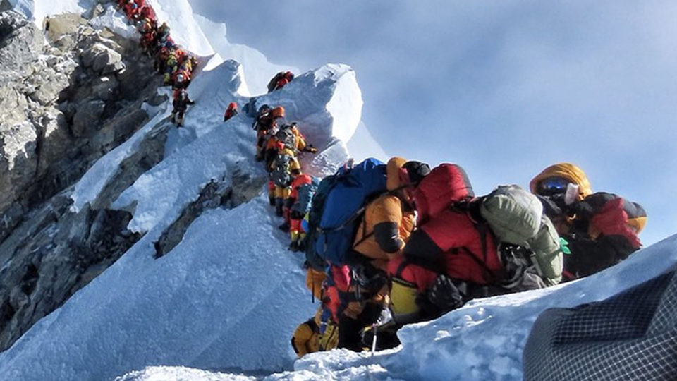
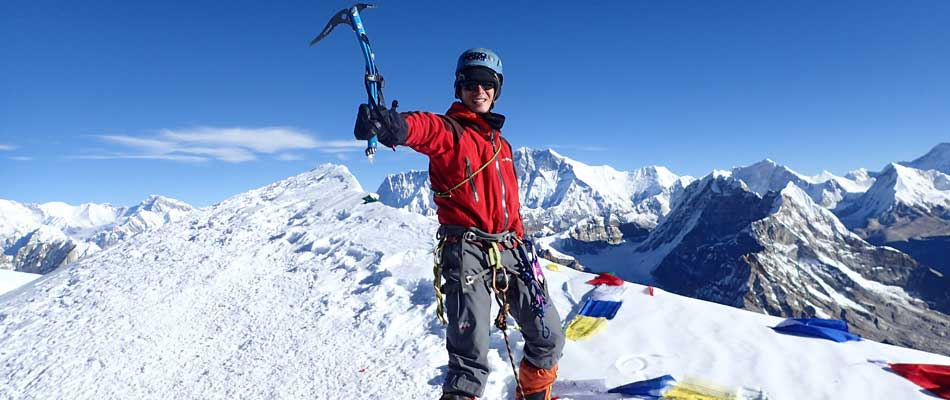
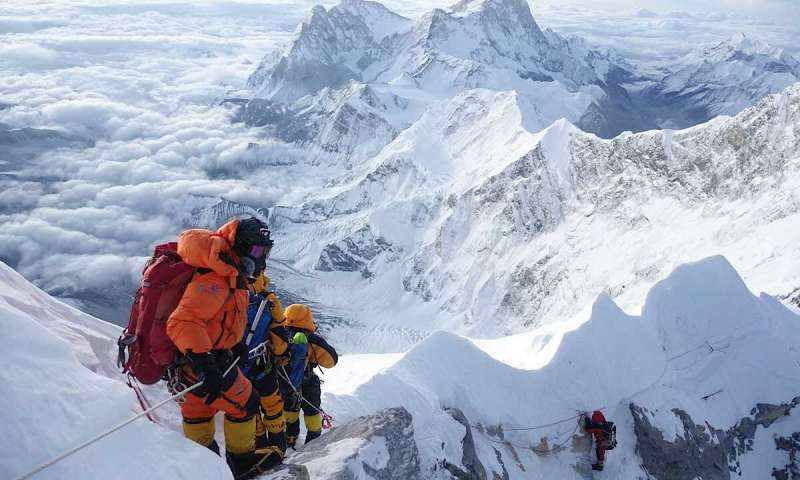
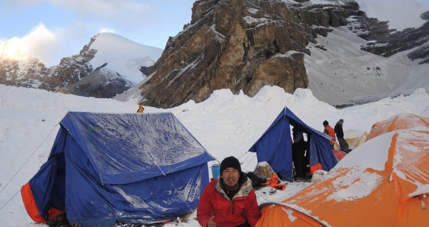

Mountaineering in Nepal
With eight of the world's highest mountains in the country, Nepal is a mountaineer's paradise. The ultimate glory of mountaineering is reaching the summit of Mt. Everest, but there are other technical challenges like Lhose beside it or you can take on any of the other 326 climbing peaks that arewaiting for you!
The Nepal Himalaya is the most formidable mountain range in the world with nearly a third of the country lying above the elevation of 3,500 m. Eight of the world's highest peaks lie within Nepal's territory Everest, Kanchenjunga, Lhotse, Makalu, Cho Oyu, Dhaulagiri, Manaslu and Annapurna, which are all over 8,000 m above sea level. The first to be climbed among them was Annapurna in 1950 by a French Expedition with Maurice Herzog as leader while Everest was first summitted by Edmund Hillary and Tenzing Norgay in 1953 with a Bristish Expedition led by John Hunt.
Besides these eight giant peaks, there are 326 other mountains within Nepal which are open for mountaineering expeditions and out of them, 103 have never been climbed before. Nepal offers mountaineers more opportunities than any other country in the world, and throws endless challenges at them including the less glorified trekking peaks which still require climbing gear and climbing skills if you want to climb them.

Nepal's climbing history goes back a long way starting with the early explorers from British India who were lured by lofty peaks and the challenges of climbing virgin peaks where no human had set foot before. By the 1960s Nepal's trekking and mountaineering industry was well establishhed with private companies providing all logistics including porters and guides for a full expedition that would spend months in the mountains. Today there are many companies that will take care of every aspect of mountain climbing and all the mountaineer has to do is arrive in good shape physically and mentally, prepared to take on the challenge and not worry about equipment and supplies. Most of the Everest expeditions are handled by well-known and trusted private companies.

The reputation of the Sherpas is built on mountaineering with many of these mountain people achieving glorified status with their multiplt climbs of Everest and other 8000m peaks. Most expeditions wouldn't go up without the loyal, hardy and extremely reliable sherpas. They risk theiir lives for their clients and are often called upon to rescue a climber in trouble. Although today there are many other ethnic groups involved in the service, they are generally referred to as Sherpas.
Despite all the attention being grabbed by mountains like Everest and Annapurna, the latter more for trekking than climbing, there are other peaks being climbed on a regular basis but don't make headline news. Lhotse, Ama Dablam and Manaslu are also climbed often besides trekking peaks like Mera, Island and Yala peaks which are quite popular. Ther are also climbers looking to climb virgin peaks as Nepal from time to time, opens up new, unheard of peaks for climbing and who wouldn't want to be the first to climb!;

Nepal has designated the Annapurna, Manaslu and Kanchenjunga regions as Conservation Areas while Sagarmatha (Everest), Langtang and Shey-Phoksundo (Dolpo) are national parks while other mountain areas might not fall into these categories but are designated as ‘Restricted Areas’ as they are close to Nepal’s northern border. While the infrastructure of, and accessibility to Sagarmatha, Annapurna, Manaslu and Langtang are well developed and easily accessible enabling mountaineers and expeditions to make quick progress to their base camps the remaining areas, including the restricted areas are still very remote, where rescue or help from external sources will be difficult or unlikely and access to these areas is complex and at times difficult. Expeditions into those areas require a completely different approach, level of commitment and organizational ability to succeed on their chosen summit.

The mountains of Nepal are grouped into different categories depending on their height and under whose authority they lie. The Ministry of Tourism is responsible for the expedition peaks above 6,500 m, while the Nepal Mountaineering Association is responsible for mountains that are known as Trekking Peaks. These peaks range in altitude from 5,800 m to 6,584 m, and call for climbing skills and climbing gear and should not be taken lightly despite the misleading title. Expeditions to peaks below 5800 metres do not require climbing permits although they will require other forms of permits to enter specific regions. All expeditions are required to pay refundable garbage deposits while expeditions to peaks above 6,500 m will also be required to employ a Liaison Officer. The best time for mountaineering expeditions is pre-monsoon when the weather is better, especially at altitude, although the visibility might be restricted with the pending monsoon conditions. Autumn is good for the slightly lower peaks, while winter is cold with short days and early spring might be subjected to seasonal snow storms. However, in these times of global warming and climate change, the seasons are no longer as predictable as they used to be.
Today in Nepal it is possible to book onto either a commercial expedition to attempt any of the larger mountains or to attempt a trekking peak with one of the many Nepali;trekking agents. If an independent expedition wishes to attempt any of the ‘legally’ open peaks then they should read the appropriate policies and procedures legally required under the current Nepal Tourism Act (Provisions relating to Mountaineering).